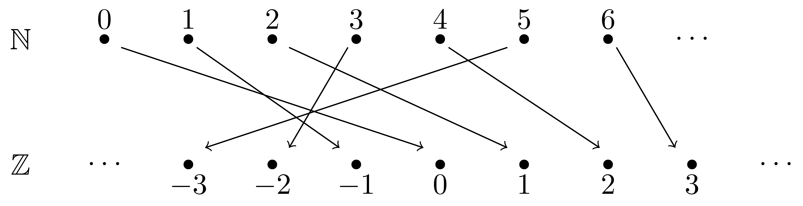
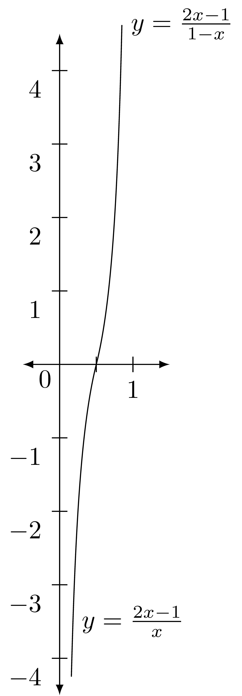

5.4 Counting and Cardinality
The concept of cardinality is introduced in kindergarten where students are taught to have the abstract concept of a number associated to a certain number of objects such as in Figure 5.5 where we have five different representations of the same cardinality. We can give a more precise mathematical definition of cardinality using functions.
Figure 5.5: Multiple representations of the number five
Related Content Standards
- (K.CC.3) Write numbers from \(0\) to \(20\). Represent a number of objects with a written numeral \(0-20\) with (\(0\) representing a count of no objects).
- (K.CC.4)] Understand the relationship between numbers and quantities; connect counting to cardinality.
- When counting objects, say the number names in the standard order, pairing each object with one and only one number name and each number name with one and only one object.
- Understand that the last number name said tells the number of objects counted. The number of objects is the same regardless of their arrangement or the order in which they were counted.
- Understand that each successive number name refers to a quantity that is one larger.
This definition defines a relation on sets where \(A\) is related to \(B\) if \(A\) has the same cardinality as \(B\).
Since the identity function, \(\iota :A \rightarrow A\) defined by \(\iota(a)=a\) for all \(a\in A\), is a bijection we see that \(A\) has the same cardinality as itself and so the relation is reflexive.
In the previous section we proved that a bijection has a functional inverse, so if \(A\) has the same cardinality as \(B\), there is a bijection \(f:A\rightarrow B\) and a second bijection, \(f^{-1}:B\rightarrow A\) showing that \(B\) has the same cardinality as \(A\). So the cardinality relation is symmetric.
If we assume that \(A\) has the same cardinality as \(B\) and \(B\) has the same cardinality as \(C\), there are bijections \(f:A\rightarrow B\) and \(g:B\rightarrow C\). In the previous section we proved that the compositions of bijections are bijections, so we know that \((g\circ f):A\rightarrow C\) is a bijection and so \(A\) has the same cardinality as \(C\), making the cardinality relation transitive.
These three properties of reflexive, symmetric, and transitive make the cardinality relation an equivalence relation and we define the abstract concept of a number with the equivalence class associated to that number, as defined by our set theory definition of the natural numbers.
While this might seem like a very abstract way to define counting of finite sets, it is an explanation of what is happening in the mind of a child when he is learning to count. Teachers understanding this level of abstraction can feel more empathy for the struggles of students as they learn concepts as simple as counting.
Since cardinality is an equivalence relation, for sets with a finite number of elements we can define a function \[\#: \mbox{\{sets with a finite number of elements\}}\rightarrow \mathbb{N}\] by \(\#(A)\) is the cardinality of \(A\). For sets with an infinite number of elements, we will label \(\#(A)\) as the equivalence class of \(A\) using the cardinality relation.
The pigeonhole principle states that if you are putting items into containers and there are more items than containers that at least one of the containers has more than one item. Some of the earliest references to this principle is in the 1620’s where multiple editions of the same book from the Jesuit university at Pont-à-Mousson referenced that there must be two men on Earth with the same number of hairs on their heads (Leurechon, 1629). The naming of the principle after pigeonholes was based on the reference to items being placed into boxes.
Figure 5.6: Illustration of pigeonholes
In the language of functions, if we have two sets, \(A\) and \(B\), with \(\#(A)>\#(B)\), then there cannot exist an injection \(f:A\rightarrow B\). In the same vein, we can say that if \(\#(A) < \#(B)\), then there cannot exist a surjection \(f:A\rightarrow B\). With this principle we have the following theorem.
Theorem 5.5 Let \(f:A\rightarrow B\) be a function.
If \(f\) is an injection (one-to-one), then \(\#(A)\leq \#(B)\).
If \(f\) is a surjection (onto), then \(\#(A)\geq \#(B)\).
If \(f\) is a bijection, then \(\#(A) = \#(B)\).
This means that if we want to prove that two sets, \(A\) and \(B\), have the same cardinality, we can find a bijection between them. We could also find two different functions, \(f:A\rightarrow B\) and \(g:A\rightarrow B\), such that one is an injection and the other is a surjection. To prove that two sets do not have the same cardinality is usually done using a proof by contradiction to show that no bijection could exist.
We explore this further using subsets of the natural numbers and an idea introduced by David Hilbert in a series of lectures for the general public in 1924 (Ewald & Sieg, 2013). In this example we imagine a hotel with an infinite number of rooms with numbers on the doors, \(1, 2, 3, 4, \ldots\), and that every room is full. When someone comes up to the registration desk, the person at the desk says that all the rooms are currently full, but we can make room for one more. The person checking in asks, “How can there be room for one more if all of the rooms are full?” The clerk says, “It’s easy. We will ask each person to just gather all of their belongings and they can move to the room with the next higher number.” (See Figure 5.7)
Figure 5.7: Hilbert’s Hotel with one extra room.
This idea is described with function notation by the function \(f:\mathbb{N}^+\rightarrow \mathbb{N}^+\) such that \(f(n)=n+1\) as being an injective function that is not surjective. However, the function \(g: \{1,2,3,4, \ldots\} \rightarrow \{2, 3,4,5, \ldots\}\) defined by \(g(n)=n+1\) is a bijection and so the two sets have the same cardinality.
One can go a little farther in this direction by having everyone move to the room with a number that is twice their current room number. In function notation this describes a function \(f: \{1, 2, 3, 4, 5, \ldots\} \rightarrow \{2, 4, 6, 8, 10, 12, \ldots\}\) such that \(f(n)=2n\), which is a bijection. So even though “half” of the numbers in the first set are removed, the two sets have the same cardinality.
This leads to the conjecture that all sets that are not of finite cardinality are the same cardinality. We will see that is not the case. We will start by dividing cardinality of infinite sets into two categories. If the set has the same cardinality as the natural numbers we will call the set countable, since the process of counting is a function that maps the natural numbers onto the set. If an infinite set is not countable, we will call it uncountable.
If a set \(A\) is countable, then we will say that \(\#(A)=\aleph_0\) (called aleph-naught).
The function \(f:\mathbb{N}\rightarrow 2\mathbb{N}\) such that \(f(n)=2n\) is a bijection and so both of these sets are countable.
Using the function described by  we can see that the integers are also countable.
We define \(\mathbb{Q}^+\) to be the non-negative rational numbers and \(f:\mathbb{N}\rightarrow \mathbb{Q}^+\) to be the function \(f(n)=\frac{n}{1}\). We can see that \(f\) is an injection and so \(\#(\mathbb{N}) \leq \#(\mathbb{Q}^+)\). However, if we write all of the non-negative rational expressions into a grid pattern as in Figure 5.8 we can see that we would write every possible non-negative rational expression of integers.

Figure 5.8: Countability argument of non-negative rational numbers
We can now define a function \(g\) from the natural numbers onto this set of rational expressions by mapping \(0\) to the expression in the first row and first column, \(1\) to the expression in the first row and second column, \(2\) to the expression in the second row and first column, \(3\) to the expression in the first row and third column, \(4\) to the expression in the second row and second column, \(5\) to the expression in the third row and first column, and so on as written in the parentheses.
We can see then that \(g\) is a surjection and so \(\#(\mathbb{N}) \geq \#(\mathbb{Q}^+)\). So \(\mathbb{Q}^+\) must be countable.
We can then create a very similar map from the negative integers onto the negative rational expressions and combine these two functions to create a surjection from \(\mathbb{Z}\) onto \(\mathbb{Q}\) and so the entire set of rational numbers is countable.
One might think that since the rational numbers are countable that all infinite sets are the same size. prove this not to be true.
Proof. We will follow the general flow of a proof by Georg Cantor (). If we assume that the interval \((0,1)\) is countable, then there is a bijection \(f:\mathbb{N}\rightarrow (0,1)\). For each natural number, \(n\), we will write \(f(n)\) in a decimal representation as \[f(n) = 0.a_{1,n} a_{2,n} a_{3,n} \ldots = \sum_{i=1}^\infty a_{i,n} \cdot 10^{-i},\] where each of the \(a_{i,n}\in \{0,1,2,3,4,5,6,7,8,9\}\), and in order to avoid two different decimal expansions representing the same real number we will assume that the \(a_{i,n}\) are not eventually all \(9\).
For each \(j\in \{1,2,3,4,\ldots\}\), let \(b_j\) be chosen from \(\{1,2,3,4,5,6,7,8\}\) such that \(b_j\neq a_{j,j}\). Then \(b=\sum_{i=1}^\infty a_{i,n} \cdot 10^{-i}\) is a real number in \((0,1)\) such that \(b\neq f(n)\) for any natural number \(n\). This means that \(f\) was not a surjection and so no such bijection exits.Now that we know that there are sets that are not countable, let’s explore some other uncountable sets.

Let \(f:(0,1)\rightarrow \mathbb{R}\) be defined by \[f(x)=\begin{cases} \frac{2x-1}{1-x}, & \mbox{if } \frac{1}{2} \leq x <1 \\ \frac{2x-1}{x}, & \mbox{if } 0<x \leq \frac{1}{2} \end{cases}.\]
If we choose a generic real number and call it \(b\), then if \(b>0\), we have that \[f\left( \frac{1+b}{2+b} \right) = \frac{2\left(\frac{1+b}{2+b}\right) -1}{1-\left(\frac{1+b}{2+b}\right)} = \frac{(2+2b)-(2+b)}{(2+b)-(1+b)} = b,\] and if \(b<0\), \[f\left( \frac{1}{2-b}\right) = \frac{2\left(\frac{1}{2-b}\right) -1}{\left(\frac{1}{2-b}\right)} = \frac{2-(2-b)}{1} = b.\] Since \(f\left(\frac{1}{2}\right)=0\), we have that \(f\) is onto and so \(\# ((0,1)) \geq \# (\mathbb{R})\). Since \((0,1)\subseteq \mathbb{R}\), we have the \(\#((0,1)) \leq \mathbb{R}\). With both inequalities being true, we have that the two sets have the same cardinality.
In fact, any subset of the real numbers is either finite, countable, or the same cardinality as \(\mathbb{R}\). Cantor called the cardinality of \(\mathbb{R}\) the cardinality of the continuum and also proved that it is the same cardinality as the power set of the natural numbers (\(\#(\mathbb{R}) = \#(\mathcal{P}(\mathbb{N}))\).
5.4.1 Exercises
Prove that the following pairs of sets have the same cardinality.
- \(3\mathbb{Z} = \{n\in \mathbb{Z}\vert n=3k \mbox{ for some } k\in \mathbb{Z}\}\) and \(5\mathbb{Z} = \{n\in \mathbb{Z}\vert n=5k \mbox{ for some } k\in \mathbb{Z}\}\)
- \([a,b]\) and \([c,d]\), where \(a\), \(b\), \(c\), and \(d\) are real numbers such that \(a<b\) and \(c<d\).
- \(A\) and \(A\cup B\), where \(A\) and \(B\) are countable sets.
Prove that if \(A\) is a set of finite cardinality, the cardinality of the power set of \(A\) is \(2^{\#(A)}\).
Look up a proof that the algebraic numbers are countable, and compare that to the proof that the rational numbers are countable.
Define two sets (not necessarily with finite cardinality) to be equivalent if they have the same cardinality. For a set \(A\), let \(\mathcal{P}(A)\) be the set of all subsets of \(A\). Prove that \(A\) is not equivalent to \(P(A)\). [Hint: Suppose \(f:A\rightarrow P(A)\) and define \[C=\{ x\vert x\in A \; \mbox{and} \; x\not \in f(x) \}.\] Show \(C\not \in \mbox{im}(f)\).]
References
Ewald, W., & Sieg, W. (2013). Lectures on the infinite. In David hilbert’s lectures on the foundations of arithmetic and logic, 1917-1933. Springer.
Leurechon, J. (1629). SelectæPropositiones in tota sparsim mathematica pulcherrimæ. Mussiponti. https://books.google.com/books?id=RGwTAAAAQAAJ